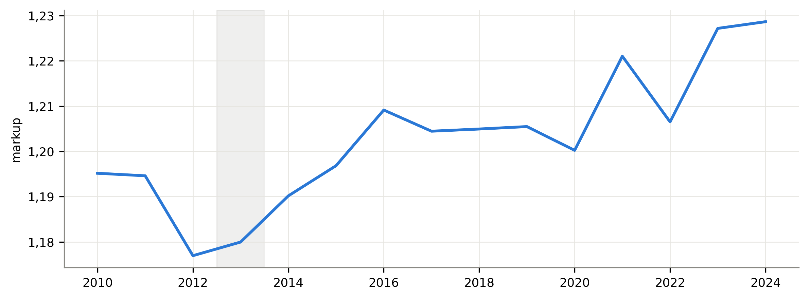
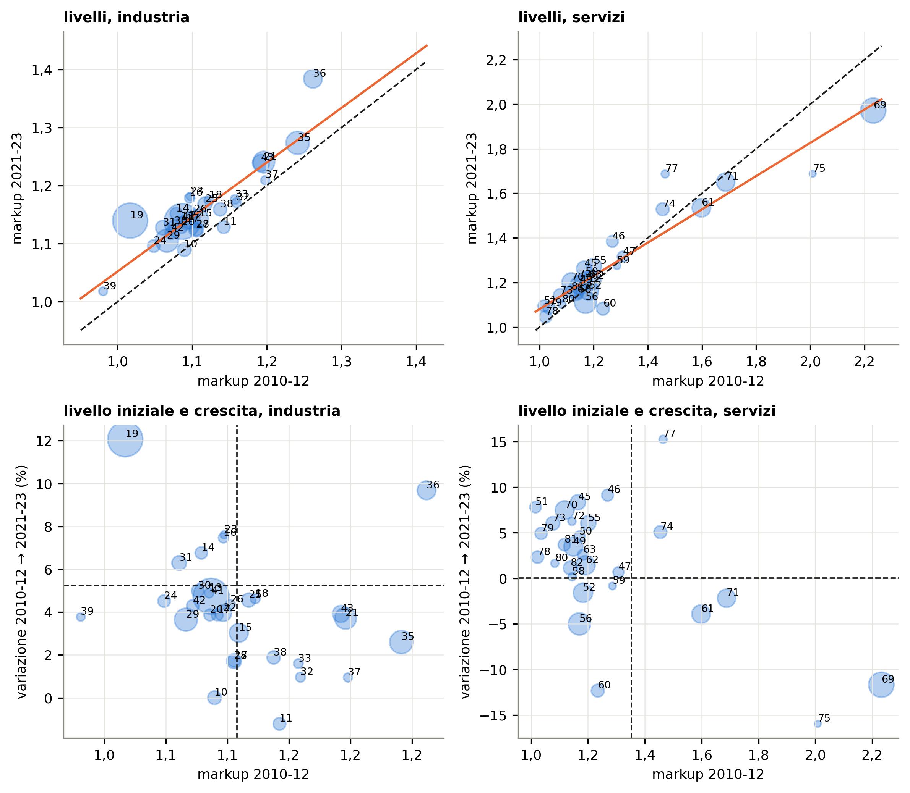
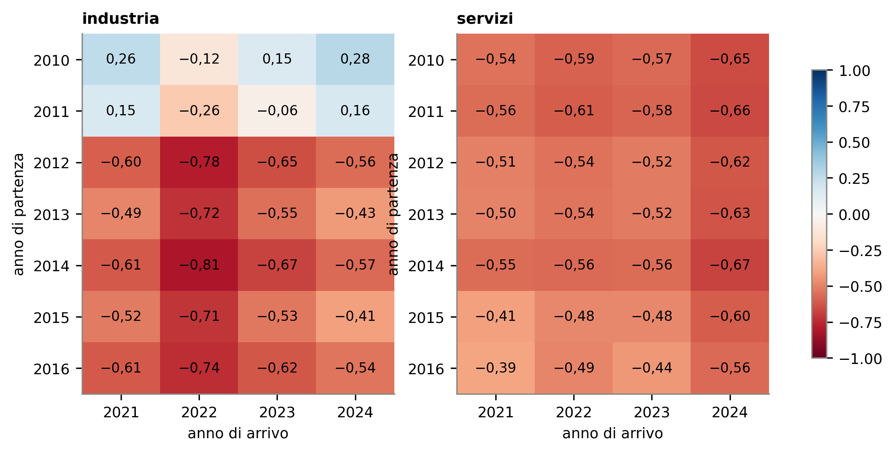
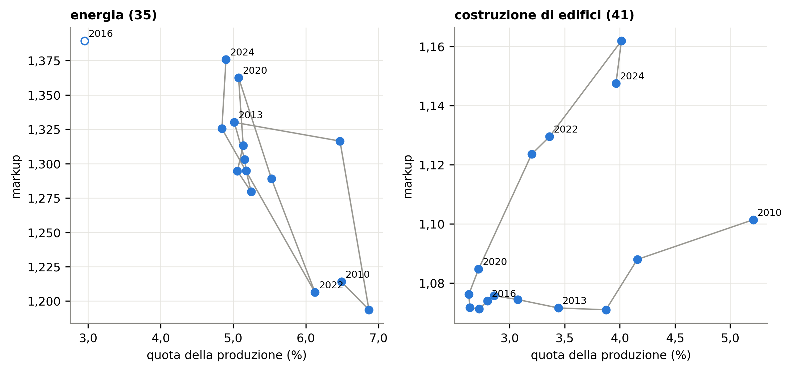

Convergenza dei margini fra settori: quanto dipende dagli anni scelti
Una prova di sensibilità sulle figure 1.5 e 1.6 del Rapporto AGCM-Banca d’Italia sulla concorrenza, con i dati Eurostat fino al 2024
Paolo Volterra ![]()
Italiano. Il Rapporto «Lo stato della concorrenza in Italia» dell’Autorità garante della concorrenza e del mercato e della Banca d’Italia (ottobre 2026) legge la lieve crescita del markup medio fra il 2010 e il 2023 come un avvicinamento fra settori: crescono di più quelli che partivano con margini bassi. Questo lavoro ricostruisce le due figure su cui poggia la conclusione con i dati Eurostat sulle imprese e ripete il calcolo per tutte le combinazioni di anno di partenza (2010-2016) e di arrivo (2021-2024), con anni singoli e con medie triennali, con e senza l’energia, e aggiunge il 2024. Nei servizi l’avvicinamento compare in ogni combinazione. Nell’industria dipende dall’anno di partenza: manca se si parte dal 2010 o dal 2011, è netto se si parte da uno degli anni successivi, e il 2024 lo indebolisce. Le traiettorie anno per anno dell’energia e delle costruzioni mostrano perché.
English. The report “The state of competition in Italy” by the Italian Competition Authority and the Bank of Italy (October 2026) reads the slight increase in the average markup between 2010 and 2023 as convergence across industries: industries that started with low margins grew more. This paper rebuilds the two charts behind that conclusion from Eurostat business statistics and repeats the computation for every combination of start year (2010-2016) and end year (2021-2024), with single years and three-year averages, with and without energy, and adds 2024. In services convergence appears in every combination. In industry it depends on the start year: it is absent when starting from 2010 or 2011, clear when starting from any later year, and 2024 weakens it. Year-by-year trajectories of energy and construction show why.
concorrenza, markup, convergenza, settori, Ateco, energia, costruzioni, Italia
Versione PDF da scaricare: Convergenza_margini.pdf.
1 La domanda
Fra il 2010 e il 2023 il markup medio delle imprese italiane, cioè quante volte i ricavi coprono i costi operativi, sale di poco. Il Rapporto dell’Autorità garante della concorrenza e del mercato e della Banca d’Italia legge questa crescita come un avvicinamento fra settori: chi partiva con margini alti li riduce, chi partiva basso li aumenta [1, p. 15].1 L’avvicinamento conta per la lettura sulla concorrenza: margini che crescono insieme, partendo dal basso, raccontano un recupero dei settori in difficoltà più che un aumento del potere di mercato dei settori già forti.
La conclusione poggia su due figure. La figura 1.5 confronta il markup di ogni divisione Ateco nella media 2010-12 con quello nella media 2021-23. La figura 1.6 confronta il markup del 2010 con la sua crescita fino al 2023 [1, pp. 18–20]. Questo lavoro chiede quanto il risultato dipenda da quegli anni.
2 Dati e indicatori
I dati sono le statistiche strutturali sulle imprese di Eurostat, che riprendono per l’Italia i conti delle imprese dell’Istat: valore della produzione e margine operativo lordo per classe Ateco a 4 cifre [2], [3]. Coprono gli anni dal 2010 al 2024: il Rapporto si ferma al 2023, il 2024 è stato diffuso da Eurostat il 30 settembre 2026. Il markup di una classe è il valore della produzione diviso per i costi operativi; quello di una divisione è la media delle sue classi, pesata per il valore della produzione. Come nel Rapporto il tabacco è escluso.
Gli indicatori di avvicinamento sono tre.
- Pendenza della retta che lega markup iniziale e finale: sotto 1 i settori si avvicinano, sopra 1 si allontanano.
- Correlazione fra livello iniziale e crescita: negativa se chi parte basso cresce di più.
- Quota della produzione nei quadranti di convergenza della figura 1.6: settori sopra la media che crescono meno della media, o sotto la media che crescono di più.
Il Rapporto usa le stesse due letture.23

Figura 1: Markup aggregato delle imprese italiane, 2010-2024. Elaborazione su dati Eurostat, statistiche strutturali sulle imprese.
In parole semplici: il margine medio passa da 1,195 nel 2010 a 1,227 nel 2023 e 1,229 nel 2024; il punto più basso è il 2012, negli anni della recessione, con il 2013 subito dopo (fascia grigia). Partire da quegli anni o dal 2010 cambia il punto di confronto.
3 La specifica del Rapporto

Figura 2: Figura 1.5 (in alto: markup medio 2010-12 e 2021-23) e figura 1.6 (in basso: markup 2010-12 e sua variazione fino al 2021-23) per divisione Ateco, industria e servizi; nel Rapporto la figura 1.6 parte dal solo 2010, caso compreso nella sezione successiva. La dimensione delle bolle è proporzionale al valore della produzione. Elaborazione su dati Eurostat.
In parole semplici: in alto, i settori sopra la diagonale tratteggiata hanno aumentato il margine; una retta arancione meno inclinata della diagonale vuol dire che i settori si avvicinano. In basso, i quadranti in alto a sinistra e in basso a destra raccolgono i settori che riducono la distanza dalla media.
| Macrosettore | Pendenza | Correlazione livello-crescita | Produzione nei quadranti di convergenza (%) |
|---|---|---|---|
| industria | 0,94 | -0,23 | 51,67 |
| servizi | 0,75 | -0,59 | 77,37 |
In parole semplici: con le medie triennali del Rapporto nei servizi l’avvicinamento è netto (pendenza 0,75), nell’industria debole (pendenza 0,94, vicina a 1).
4 Tutte le combinazioni di anni
Il calcolo si ripete con un solo anno di partenza, dal 2010 al 2016, e un solo anno di arrivo, dal 2021 al 2024.

Figura 3: Correlazione fra markup dell’anno di partenza e sua crescita fino all’anno di arrivo, per divisione Ateco. Blu: convergenza; rosso: divergenza. Elaborazione su dati Eurostat.
In parole semplici: nei servizi ogni casella è blu: la correlazione va da −0,67 a −0,39. Nell’industria le righe del 2010 e del 2011 sono chiare o rosate (da −0,26 a 0,28), quelle dal 2012 in poi blu (da −0,81 a −0,41).
5 Anni singoli o medie
Con un solo anno di partenza un settore che quell’anno era basso per motivi temporanei risale da solo, e il grafico lo mostra come avvicinamento: è la regressione verso la media. Le medie triennali attenuano l’effetto.
| Macrosettore | Periodo | Misura | Pendenza | Correlazione livello-crescita | Produzione nei quadranti di convergenza (%) |
|---|---|---|---|---|---|
| industria | 2010 → 2023 | anni singoli | 1,16 | 0,15 | 54,03 |
| servizi | 2010 → 2023 | anni singoli | 0,74 | -0,57 | 79,22 |
| industria | 2012 → 2023 | anni singoli | 0,75 | -0,65 | 64,97 |
| servizi | 2012 → 2023 | anni singoli | 0,80 | -0,52 | 68,11 |
| industria | 2013 → 2023 | anni singoli | 0,83 | -0,55 | 68,85 |
| servizi | 2013 → 2023 | anni singoli | 0,82 | -0,52 | 69,95 |
| industria | 2010-12 → 2021-23 | medie triennali | 0,94 | -0,23 | 51,67 |
| servizi | 2010-12 → 2021-23 | medie triennali | 0,75 | -0,59 | 77,37 |
| industria | 2012-14 → 2021-23 | medie triennali | 0,71 | -0,71 | 75,86 |
| servizi | 2012-14 → 2021-23 | medie triennali | 0,80 | -0,57 | 77,37 |
| industria | 2013-15 → 2021-23 | medie triennali | 0,73 | -0,70 | 75,60 |
| servizi | 2013-15 → 2021-23 | medie triennali | 0,82 | -0,55 | 58,01 |
In parole semplici: nell’industria le medie che partono dal 2012-14 o dal 2013-15 confermano l’avvicinamento (pendenza 0,71 e 0,73), quella del Rapporto, dal 2010-12, lo mostra appena. La dipendenza dall’anno di partenza non è quindi solo un effetto della regressione verso la media.
6 Traiettorie: energia e costruzioni
Due divisioni grandi spiegano buona parte della differenza nell’industria: la fornitura di energia (35) e la costruzione di edifici (41). Il Rapporto indica l’energia fra i settori che allargano le distanze.4

Figura 4: Traiettoria anno per anno, 2010-2024: quota della divisione sul valore della produzione totale (asse orizzontale) e markup (asse verticale). Il punto vuoto segnala un anno con classi riservate, quindi dato incompleto, escluso dalla linea. Elaborazione su dati Eurostat.
In parole semplici: l’energia perde peso nell’economia (dal 6,5% al 4,9% della produzione) ma alza il margine (da 1,214 a 1,376), e lo fa quasi tutto fra il 2011 e il 2013: per questo partire dal 2013 la fa sembrare ferma. Le costruzioni perdono peso fino al 2020 (quota 2,7%), con il margine fermo sui minimi dal 2013 (1,072 nel 2013, 1,085 nel 2020), e poi risalgono insieme in peso e margine con gli incentivi edilizi (4,0% e 1,147 nel 2024). Il punto vuoto dell’energia, nel 2016, ha due classi su otto coperte da segreto statistico e non va letto.
7 L’industria senza energia e il 2024
| Industria | Partenza | Arrivo | Pendenza | Correlazione livello-crescita | Produzione nei quadranti di convergenza (%) |
|---|---|---|---|---|---|
| tutte le divisioni | 2010 | 2023 | 1,16 | 0,15 | 54,03 |
| senza energia (35) | 2010 | 2023 | 1,09 | 0,05 | 55,64 |
| tutte le divisioni | 2010 | 2024 | 1,26 | 0,28 | 24,08 |
| tutte le divisioni | 2013 | 2023 | 0,83 | -0,55 | 68,85 |
| senza energia (35) | 2013 | 2023 | 0,87 | -0,45 | 69,64 |
| tutte le divisioni | 2013 | 2024 | 0,89 | -0,43 | 59,13 |
In parole semplici: togliendo l’energia il quadro cambia poco: dal 2010 l’industria resta senza avvicinamento (pendenza 1,09), dal 2013 lo conserva (0,87); conta più l’anno di partenza che il singolo settore. Con il 2024 come anno di arrivo, partendo dal 2010, la pendenza sale a 1,26 e solo il 24% della produzione industriale sta nei quadranti di convergenza; nei servizi la pendenza resta 0,72.
8 Conclusioni
- Servizi. L’avvicinamento dei margini è solido: compare con ogni coppia di anni, con anni singoli e con medie triennali, e prosegue nel 2024.
- Industria. Il risultato dipende dall’anno di partenza. Partendo dal 2010 o dal 2011 i settori non si avvicinano; partendo da uno degli anni successivi, a cominciare dal 2012-13, il punto più basso del ciclo, si avvicinano nettamente. Le medie triennali confermano la differenza, che quindi non è solo un effetto statistico.
- Energia e costruzioni. L’energia alza il margine quasi tutto fra il 2011 e il 2013, le costruzioni toccano il fondo nel 2013 e risalgono dopo il 2020: la scelta del 2010 o del 2013 cambia il loro ruolo, anche se togliere l’energia non basta a cambiare la conclusione.
- Lettura del Rapporto. La conclusione «i settori convergono» vale con sicurezza per i servizi; per l’industria va presentata come dipendente dal periodo, e il 2024 la indebolisce.
Riferimenti
Nota metodologica
Questo documento nasce dall’interazione di tre componenti. L’autore definisce le domande, esercita il giudizio critico e assume la responsabilità scientifica ed editoriale del risultato. Strumenti di intelligenza artificiale generativa sono impiegati a supporto della ricerca bibliografica, della lettura, della sintesi, della riorganizzazione argomentativa e della revisione del testo. Un’infrastruttura open source sviluppata dall’autore automatizza il reperimento, l’armonizzazione e il controllo dei dati dalle fonti statistiche ufficiali, e mantiene l’elaborazione documentata e riproducibile.
Le fonti sono pubblicamente accessibili e citate con la loro denominazione ufficiale; l’analisi è pertanto integralmente auditabile e replicabile da terzi a partire da esse. Le tabelle e i grafici sono elaborazioni dell’autore: calcoli, aggregazioni, trasformazioni e scelte di rappresentazione sono attribuibili all’autore e non agli enti produttori dei dati.
La responsabilità per le fonti utilizzate, le analisi condotte, le elaborazioni effettuate, le interpretazioni proposte e le conclusioni formulate resta interamente in capo all’autore. L’intelligenza artificiale è stata impiegata come ambiente di supporto cognitivo ed editoriale, non come fonte primaria, autore autonomo o sostituto del giudizio critico.
8.1 Note
Note
«A livello aggregato, si osserva una convergenza tra il gruppo dei settori caratterizzati da markup inizialmente elevati, che hanno registrato una lieve flessione su quasi tutto il periodo preso in esame, e i gruppi dei settori con markup medio o basso, che hanno invece mostrato un trend positivo di crescita.» [1, p. 15]↩︎
«Nei servizi, invece, il coefficiente angolare più basso segnala una maggiore convergenza: i settori con markup inizialmente più elevati tendono ad aumentare meno, o in alcuni casi a ridurre il proprio markup, rispetto a quelli con livelli iniziali più contenuti.» [1, p. 19]↩︎
«Al contrario, i settori nei quadranti (2) e (4) contribuiscono a un processo di convergenza, nella misura in cui livelli iniziali e crescita dei markup presentano scostamenti di segno opposto rispetto alla media settoriale, riducendo la distanza da quest’ultima.» [1, p. 20]↩︎
«Nell’ambito dell’industria (pannello a), tra i comparti che hanno contribuito ad aumentare la dispersione settoriale si rilevano la fornitura di energia elettrica, gas, vapore e aria condizionata (35) – posizionata nel quadrante in alto a destra – l’industria alimentare (10), la metallurgia (24) e la fabbricazione di macchinari ed apparecchiature n.c.a. (28), questi ultimi collocati nel quadrante in basso a sinistra.» [1, p. 20]↩︎